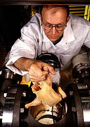
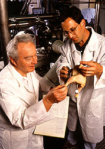

|
Contents
Steaming Out the Salmonella Risk

Chemical engineer Rich Radewonuk inserts a Cornish hen into an experimental
chamber where a brief burst of 290°F steam will kill 99.99 percent of
surface microorganisms.
(K7739-11)
|
The cool September breeze ruffles the napkins on the Labor Day picnic table
that is groaning under the weight of hot, barbecued chicken, fresh potato
salad, and steaming baked beans.
Do the flu-like symptoms of Salmonella foodborne illness await these
picnic goers? Probably not.
But there would be even less chance if a new processing technique for
poultry and raw meat designed by Agricultural
Research Service chemical engineer Arthur I. Morgan gains widespread use.
Morgan has discovered a simple, relatively inexpensive way to kill
Salmonella and other harmful microorganisms on poultry, fresh beef, and
pork good news for food processors and consumers alike.
At the ARS Eastern Regional Research Center (ERRC) in Wyndmoor,
Pennsylvania, Morgan and colleagues have designed, built, tested, and patented
a device that kills bacteria on the surface of raw meat. Without cooking the
meat and in just 25 milliseconds this device kills 99.99 percent of bacteria by
heating the meat surface quickly with steam and cooling it in a vacuum. Their
prototype machine could be used easily online in processing plants.
"Harmful microorganisms usually dwell only on the surface of intact
meat," Morgan explains. "This is true of enterobacteria, like
Salmonella, which originate in a living animal's gastrointestinal
tract."
This means, he says, that before slaughter there are no toxic bacteria under
an animal's skin. However, since the gastrointestinal tract (GI) is removed
during processing, in some cases bacteria may be spread from the contents of GI
tract to the meat surface.
Contamination may also result from contact with workers' hands, with
slaughtering equipment, or with chilled-water treatment baths that carcasses
are immersed in. One contaminated bird raises the potential of spread to other
carcasses.
"Industry has a hard time removing surface contaminants from meat
because microorganisms hang on tenaciously. Many escape hot-water washes or
sprays containing bactericide and surfactants," says Morgan.

Mechanical engineers Arthur Morgan (left) and Neil Goldberg prepare to record
data from a test run.
(K7740-1)
|
"This is true even when exposure time and bactericide content are more
than enough to sterilize a smooth surface. We've seen contaminants remain on
meat even after we've used organic acid solutions and trisodium
phosphate."
One of the reasons that existing methods aren't very effective in killing
the harmful microorganisms is because of the liquid nature of water.
"Water can't reach all the contaminated surfaces. Feather, hair, or scale
follicles are large enough to hide bacteria, but too small to admit a liquid
wash or spray," Morgan says. "An impossibly high water pressure would
be needed to overcome the capillary pressure in a pore just large enough to
house a bacterium."
This makes it difficult for liquid washes to totally eliminate contaminants
on meat surfaces. And the meat-packing industry is limited in using heat
because meat must keep its raw appearance or consumers won't buy it.
Morgan came up with the idea of surrounding the carcass with vacuum, then
applying a short burst of steam, and finally cooling the surface with the
vacuum to kill microbes without cooking the meat.
"We knew that bacteria can be destroyed by disrupting their metabolism,
which is exactly what the steam does," Morgan says. "Heat conduction
throughout a piece of meat is much slower than surface heating by steam
condensation. We figured that if the heating rates of meat and microorganisms
were equal, the bacteria would die before the meat cooked. Therefore, we knew
that it's possible to surface pasteurize meat without cooking it."
The equipment that Morgan uses to prove his theory consists of an 8-inch,
stainless steel ball valve with an 8- by 11-inch treatment chamber that will
easily hold a chicken dropped in with its legs first. Two computer-controlled
gas valves admit either steam or vacuum into the treatment chamber. Steam is
generated in one 50-gallon tank, and another serves as a vacuum receiver. Both
tanks are connected to the treatment chamber by short lengths of 3-inch tubing.
In 1 second, this machine takes the chicken through a vacuum to withdraw all
air, flushes it with steam, treats it with a burst of steam heated to
290oF to kill harmful bacteria, and finally vacuum-cools it all
without cooking the surface.
"Vacuum treatment before steam heating removes 98 percent of the air
around the meat, and flushing with low-temperature, no-air steam eliminates the
rest. We use low-temperature steam in this case so the meat won't be warmed
prematurely," Morgan says. "Removing the air before treating with
steam actually makes the treatment more effective, since the air would
otherwise slow down the rate at which the steam heats the meat surface."
"A commercial version of one of our machines could treat 4,000 birds an
hour. This means that if we built multiple chambers for birds, capacities would
be in multiples of 4,000 for each machine," says Morgan. "Our total
cycle time indicates that one machine can serve an entire broiler processing
line after the chill tank and before the clean cut-up line."
"We got similar results with beef and pork. However, we think that more
pathogens can be killed on beef and pork by using higher temperatures for
shorter times and still not cook the meat.
"Future work focuses on adapting the process to industry. This
equipment could be added at the slaughterhouse without increasing costs more
than a cent per pound. We're looking for a company that might like to license
our device, which is patented in the United States and Canada."
— By Doris Stanley.
ARS
Eastern Regional Research Center, 600 E. Mermaid Lane, Wyndmoor, PA
19038-8551; phone (215) 233-6595
[Top]
|